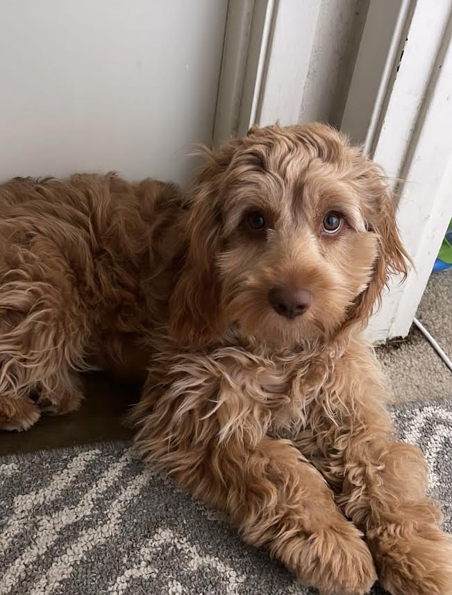
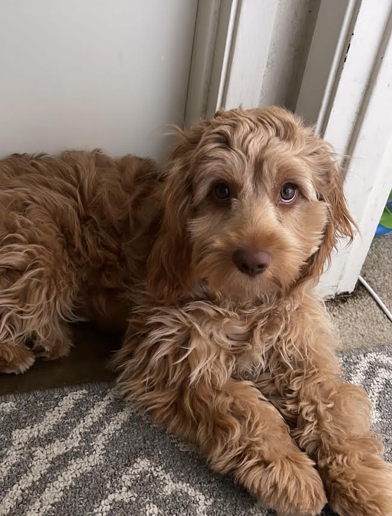

Here are some fun facts/tips:
- FACTS:
- I enjoy traveling
- I just recently got a puppy, her name is Bailey
- I value family
- I have binge watched way too many shows
- TIPS:
- Always start assignments early
- Make sure to use class resources and tutoring centers
- Organization is key! I have used planners, google calendar, and reminders